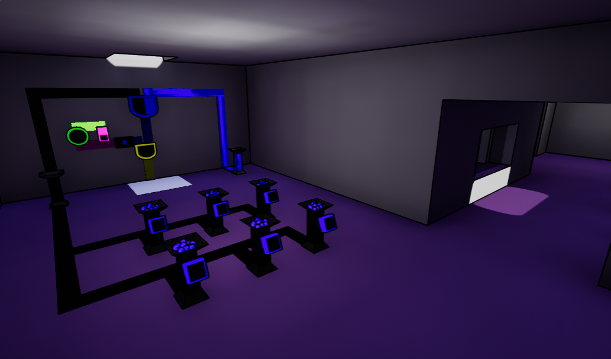
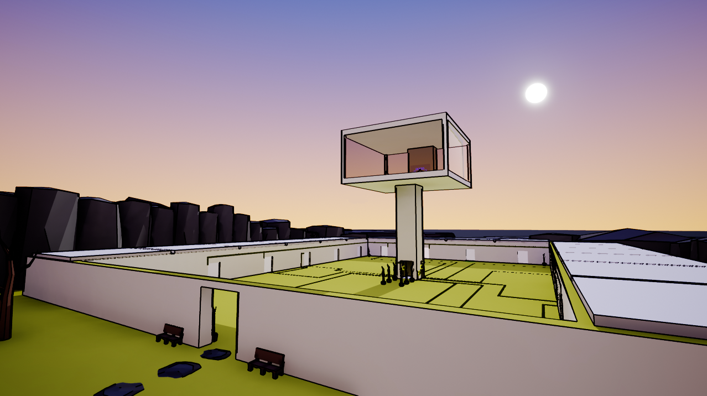
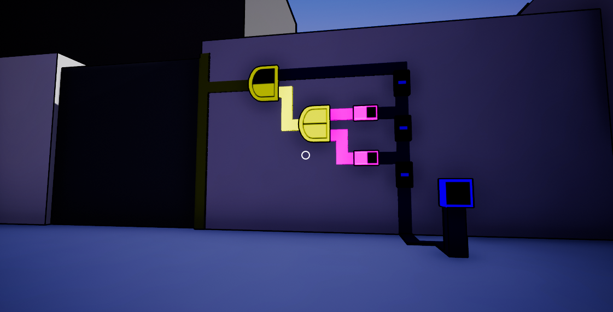
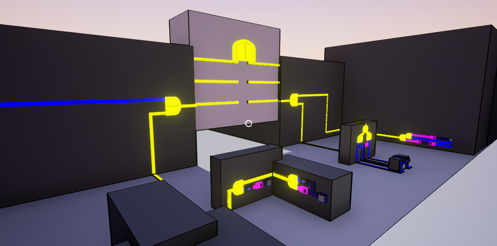

Sensorium |
||||||
|
Design, programming, art, sound, and everything else by Tad Cordle  Sensorium is an open-world puzzle game in which you solve puzzles that revolve around the 5 senses: touch, taste, sight, smell, and hearing. Staying true to the Myst-vania genre, nothing in the game is outright explained to you; a big part of the game is about exploring, learning, and piecing together clues about what's going on and how everything works.  The gameplay is simple and consistent without being dumbed-down. Despite the main game mechanics being fairly different from one another, you'll always know exactly what you can interact with and when. (i.e. no pixel hunting, which is a problem that plagues many adventure games!)  Inspirations include Myst, The Witness, Portal, and Antichamber. I'm a big fan of games that present their stories and themes through gameplay and the environment rather than through cutscenes or long-winded text. Sensorium will have some central themes, but it will probably not have a traditional story (at least not a clear-cut one).  The game is being built in Unreal Engine 4. *** Spoiler warning! *** If you are looking for more information, I occasionally post development updates on tigsource. You can find those updates here. I also stream development at https://twitch.tv/rbdjellyfish. |